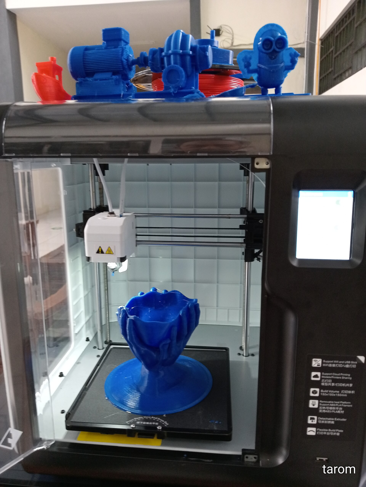
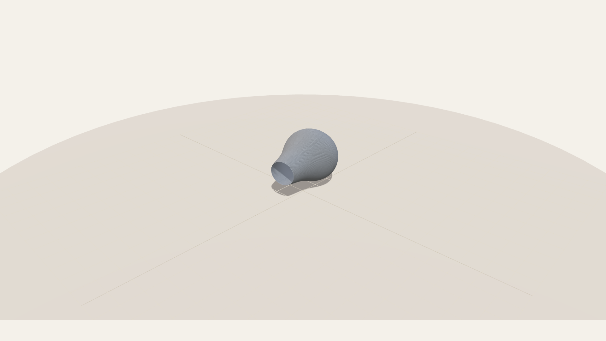
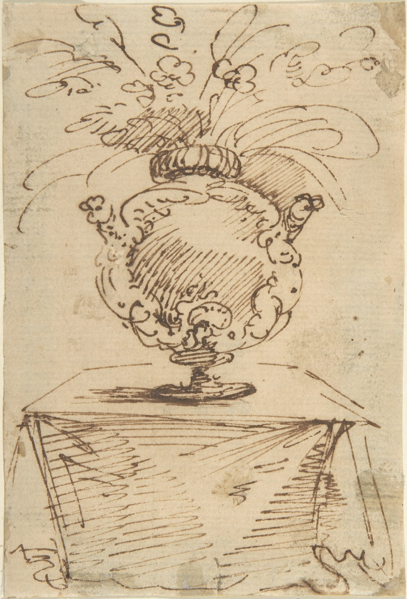
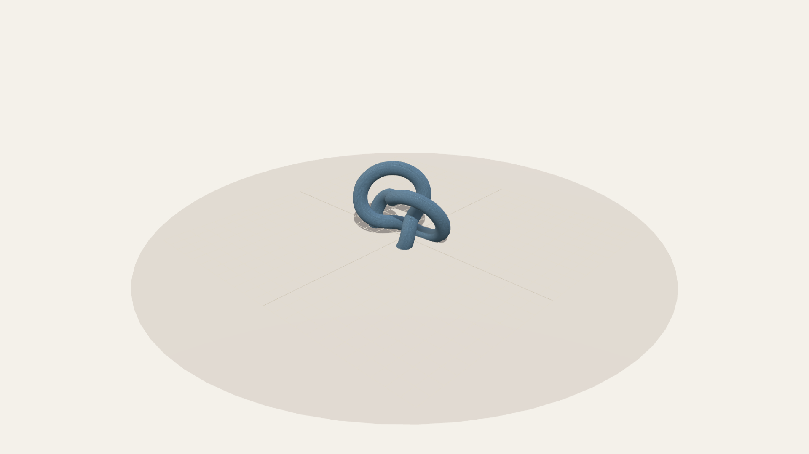
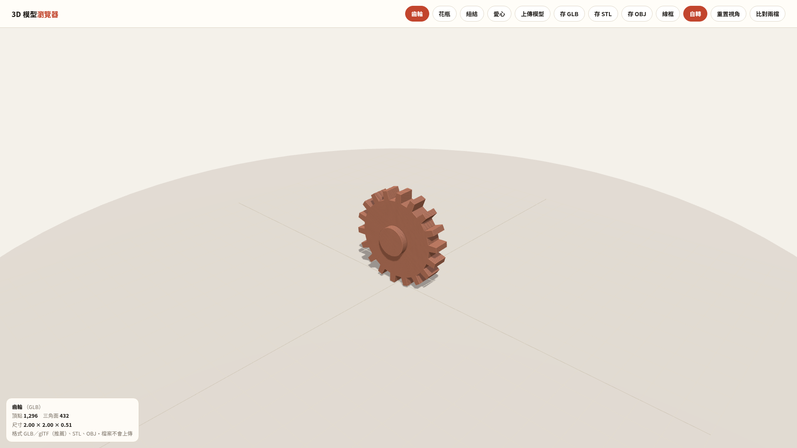
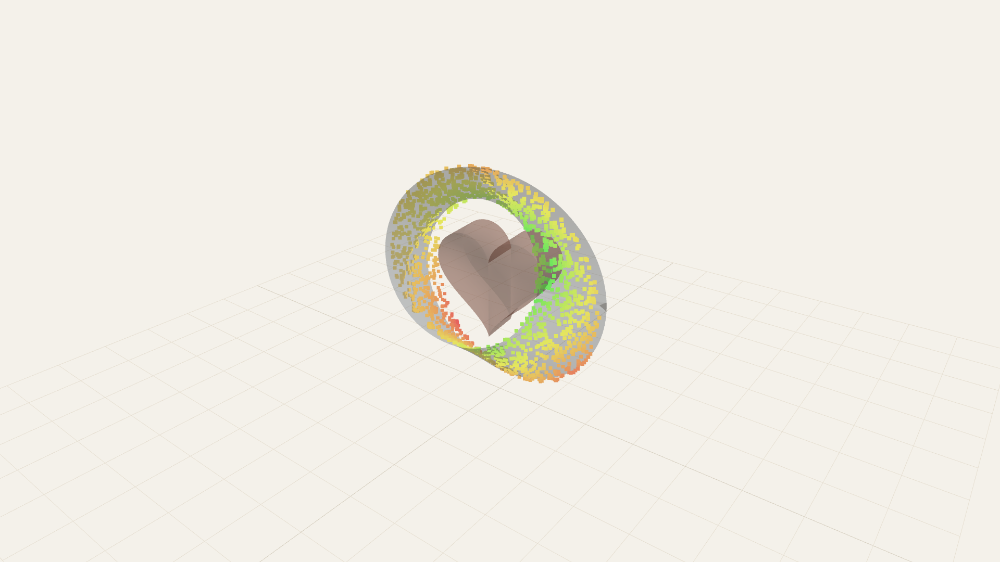
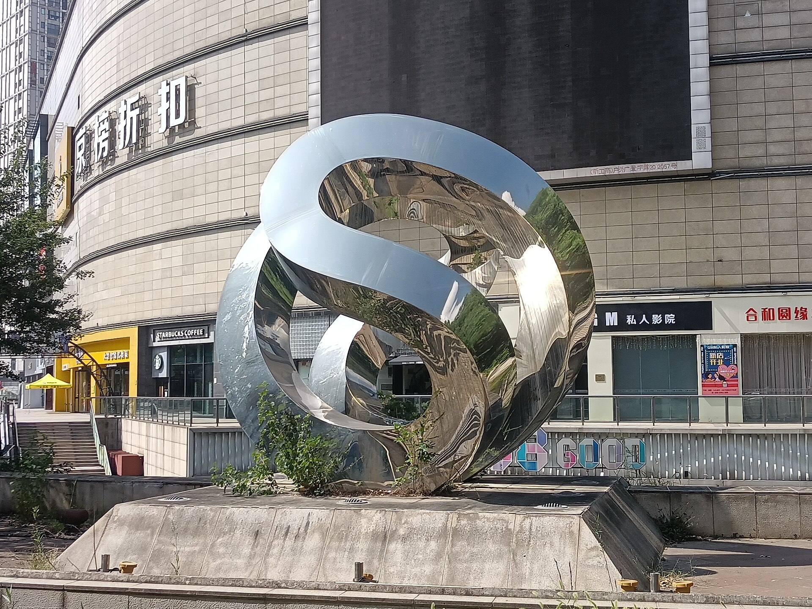

用程式生出 3D 模型，還自己做瀏覽器與比對工具
完整長片 3:51 ｜ Shorts 導覽 1:56
測試日期：2026-11-04 工具鏈：Python 標準函式庫（math／struct／json）＋ three.js 0.160

一、為什麼要自己做
需求只有三句話：
- 產生 3D 模型檔
- 寫一個能看 3D 檔的瀏覽器
- 比對兩個 3D 檔差在哪
現成的路要嘛裝一套 3D 軟體，要嘛用雲端服務算配額。但這三件事其實用標準函式庫就做得完：
mesh 就是一組頂點加一組三角形索引，GLB／STL／OBJ 三種格式的容器規則都寫在公開規格裡，
加起來不到 900 行程式。
二、模型怎麼產生
核心只有一個資料結構：Mesh.v（頂點陣列）與 Mesh.f（三角形索引陣列）。每種模型就是一個產生函式：
| 模型 | 做法 | 頂點 | 三角面 | GLB 大小 |
|---|---|---|---|---|
| 齒輪 | 極座標齒形輪廓 ＋ 側牆 ＋ 三角扇上蓋 ＋ 中心凸轂 | 243 | 432 | 36.4 KB |
| 花瓶 | 旋轉體（半徑函式 0.28 + 0.42·sin ＋ 0.10·sin(2.2πt)） | 2,068 | 4,048 | 96.9 KB |
| 環面紐結 | 沿 (p=2, q=3) 曲線掃圓管，取正交基底 | 3,520 | 7,040 | 166.0 KB |
| 愛心 | 2D 心形曲線擠出厚度 | 146 | 288 | 7.7 KB |
| 莫比烏斯帶 | 帶狀曲面，u 走一圈、v 半扭轉 | 1,760 | 3,200 | 79.7 KB |


兩個一定要處理的細節
① 孔洞不能「把外輪廓乘一個係數」
第一版齒輪的中心孔是把齒形輪廓座標乘 0.22 做出來的。結果不是圓孔，而是18 齒的小星形，
渲染出來中心一圈白色星芒，看起來像破圖。改成「實心 ＋ 中心凸轂（小圓柱疊上去）」後完全乾淨。
② 平面著色 vs 平滑著色
GLB 預設走 per-face 頂點（每個面自己的法線），頂點數 ≈ 3 × 三角面，邊角銳利但曲面會一格一格。
曲面模型改用「位置量化焊接 ＋ 平均面法線」：
| 模型 | 焊接前頂點 | 焊接後頂點 | GLB 大小變化 |
|---|---|---|---|
| 環面紐結 | 21,120 | 3,520 | 578.5 KB → 166.0 KB |
同一顆模型，檔案小 71%、畫面變平滑，幾何完全沒變（三角面數相同）。

三、GLB 是自己刻的容器
glTF 2.0 的二進位封裝規則不能錯，錯一個欄位就是整顆載不進去：
- 檔頭：
struct.pack('<4sII', b'glTF', 2, total) - 兩個 chunk：JSON（
<I4s＋b'JSON'）與 BIN（b'BIN\x00'） - 兩個 chunk 長度都要補到 4 的倍數（JSON 補空白、BIN 補
\x00） buffers[0].byteLength用「補完後」的總長- POSITION accessor 一定要有
min／max，否則其他工具算不出包圍盒 bufferViews.target：頂點屬性 34962、索引 34963；索引用UNSIGNED_INT（5125）
驗證方式很便宜：讀回檔頭比對 total == 檔案大小，再讀 STL 的 84 + 50 × 面數 == 檔案大小。
兩個都對，代表容器沒寫壞。
四、瀏覽器：能上傳、能下載
直接玩：https://littler5071.github.io/3d/
| 功能 | 實作 |
|---|---|
| 讀檔格式 | GLB／glTF／STL（binary）／OBJ／STEP・STP（內嵌 OpenCascade wasm 三角化） |
| 上傳 | 「上傳模型」按鈕（input 鋪滿整個按鈕）＋ 整頁拖放 |
| 下載 | 存 GLB／STL／OBJ（GLTFExporter／STLExporter／OBJExporter）＋存原檔（把載入的檔案原樣存回，含 STEP） |
| 檢視 | OrbitControls 旋轉縮放、線框、自轉、重置視角 |
| 資訊 | 檔名、格式、頂點數、三角面數、尺寸 X×Y×Z |
| 鏡頭 | 依 bounding box 自動置中，dist = r × 2.05 / tan(fov/2) |
| 隱私 | 全程在瀏覽器本機解析，檔案不上傳 |

上傳踩到的兩個坑
坑 1：靠副檔名判斷，檔案被改名就讀不到。
通訊軟體下載常變成 knot-noext、knot.stl.txt，配 accept=".stl" 會讓系統檔案視窗直接反灰，
使用者看到的就是「按開檔不能上傳」。改成讀前 64 bytes 判斷：
| 開頭特徵 | 判定 |
|---|---|
glTF | GLB |
{ | glTF（JSON） |
84 + 50 × n == 檔案大小 | binary STL |
v ／f ／# 開頭 | OBJ |
實測：knot-noext（無副檔名）→ 正確讀成 STL、21,120 頂點／7,040 面；vase.obj.txt → OBJ、12,144／4,048。
坑 2：display:none 的 input 在 iOS Safari 點不動。
改成 label{position:relative;overflow:hidden} ＋ input{position:absolute;inset:0;opacity:0}，
整個按鈕都是可點區域（實測 label 86×38、input 84×36）。
下載要驗 round-trip，不能只看「有沒有檔案」
| 動作 | 產出 | 驗證結果 |
|---|---|---|
| 存 GLB | mobius.glb 80.2 KB | 檔頭 glTF v2、total 270,260 == 實際大小 |
| 存 STL | mobius.stl 156.3 KB | 3,200 面、84 + 50×3,200 = 160,084 == 實際大小 |
| 存 OBJ | mobius.obj 309.6 KB | 9,600 個 v、3,200 個 f |
五、比對：差異要能量，不能只用眼睛看
直接玩：https://littler5071.github.io/3d/compare/
除了面數、體積、表面積、尺寸，真正有用的是取樣偏差：在 A 表面依面積加權隨機取點，
量每一點到 B 表面的最近距離，再反向做一次。

效能：暴力法 → 空間網格
1500 點 × 3200 面 ≈ 480 萬次距離計算，瀏覽器要 9.3 秒。改成均勻網格：
- 格子邊長 ＝ 包圍盒最長邊 ÷ 14
- 每個三角形塞進它 bbox 跨到的所有格子
- 查詢時從所在格往外一圈圈找，
best ≤ r × cell就停
| 版本 | 同一對（3,200 面 vs 384 面）耗時 |
|---|---|
| 暴力法 | 9.3 秒 |
| 空間網格 | 1.0 秒 |
準確性對照：用 288 面球體、400 個隨機點，同時跑網格與暴力法逐點比對 ——
maxErr = 0、meanErr = 0，加速沒有犧牲精度。
三組對照（網頁與命令列數字一致）
| 對照 | 平均偏差 | 95% 偏差 | 最大偏差 | 體積差 |
|---|---|---|---|---|
| 同一顆：mobius.glb × mobius.stl | 0.00000 | 0.00000 | 0.00000 | 0.0% |
| 粗面版（面數少 2,816） | 0.00148 | 0.00322 | 0.00433 | 0.7% |
| 完全不同（莫比烏斯帶 × 愛心） | 0.38680 | 0.67530 | 0.84680 | 87.3% |
第一組是關鍵：同一個模型的兩種格式，幾何必須完全相同 → 偏差 0，代表演算法沒有亂算。
第二組代表「形狀一樣、三角化不同」，數字小但非零。第三組才是形狀真的不同。
一定要先對齊中心
兩顆模型若原點不同，位移會被誤認為巨大差異。比對頁預設把 A、B 各自移到自己的包圍盒中心再算，
並提供「對齊中心」開關；關掉時可以拿來檢查兩個檔是否本來就放在同一個座標系。
六、真的存在於世界的版本

程序化建模最適合做的，就是這種「用文字很難講、用公式很好算」的形狀：齒輪、旋轉體、紐結、莫比烏斯帶。
反過來說，人臉、布料皺褶、動物肌肉這種靠觀察的東西，它給不了——這也是下面限制的第一條。
七、限制（實話）
- 只做程序化建模：幾何是人類寫的參數曲面，做不出人型、有機造型。要那種形狀得走掃描、雕刻或雲端生成。
- 比對是點到面距離，不是布林運算：它告訴你「哪裡不一樣、差多少」，不會給你「A 減 B 之後的實體」。
- 取樣是隨機的：同一對模型重跑兩次，平均偏差小數點後第三位會跳動（1500 點、標準差約 1e-4）。
- 沒有材質／貼圖：GLB 只帶單一 PBR 顏色，不處理 UV 與貼圖。
- 大檔會慢：10 萬面以上的模型，比對會落在 5～10 秒，手機可能記憶體吃緊。
- STL 沒有法線、OBJ 沒有材質：載入後要自己補
computeVertexNormals()與MeshStandardMaterial。
八、結論
STEP／STP（CAD 檔）怎麼讀
three.js 沒有 STEP 載入器——STEP 是 B-rep 曲面，不是三角網格，必須先三角化。做法是內嵌 occt-import-js（OpenCascade 編譯成 WebAssembly，約 7.3 MB）：讀到檔頭含 ISO-10303-21 就交給它，回傳每個實體的頂點與索引，再組回 three.js 的幾何。整個過程在瀏覽器本機完成，檔案不會上傳；第一次載入引擎約 5～10 秒，之後由瀏覽器快取。
限制講清楚：STEP 只會變成三角網格（曲面依 deflection 近似），工程圖、尺寸標註、組立約束都不會出現；顏色有就用、沒有就套預設色；單位一律當 mm。實測 cube.stp 12 面、rounded-cube.step 84 面。
| 問題 | 答案 |
|---|---|
| 能不能產生 3D 模型檔？ | 能，五顆模型、三種格式，標準函式庫即可 |
| 能不能瀏覽 3D 檔？ | 能，GLB／STL／OBJ／STEP 上傳、旋轉、量面數、再存回三種格式 |
| 能不能比對兩個檔？ | 能，量化到「平均／95%／最大偏差 ＋ 體積差」，並畫出熱點圖 |
| 值不值得自己寫？ | 值得。全部加起來不到 900 行，沒有安裝、沒有配額、可重現、檔案小 |
若想自己重跑一次：
~/.venvs/video/bin/python ~/banner/tools/make3d.py # 四顆內建模型
~/.venvs/video/bin/python ~/banner/tools/make3d_extra.py # 莫比烏斯帶
~/.venvs/video/bin/python ~/banner/tools/compare3d.py A B # 命令列比對